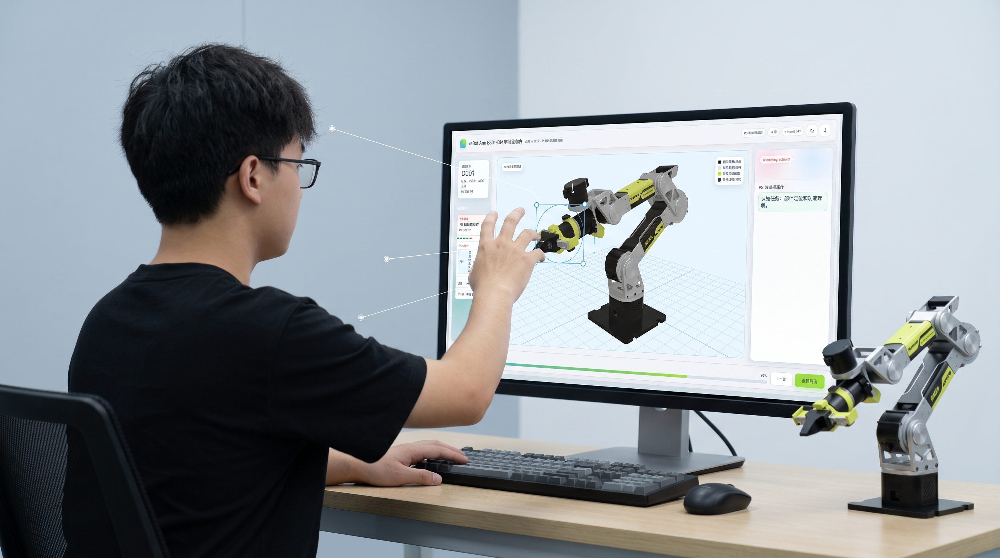

Embodied AI Interaction / 机械臂认知操作实验
reBot 具身 AI 机械臂学习系统
让学习者用身体动作理解机械臂，而不只是记住零部件名称。reBot 将手势、3D 场景、任务反馈和实验记录组织为一条可体验、可复盘的学习路径。

Research To Opportunity
从观察证据出发，把学习断点转成可验证的设计回应。
不把研究结论做成装饰性海报，而是明确展示：观察到了什么、问题在哪里、系统如何回应。
观察到的断点设计回应
结构与空间脱节图纸和零部件名称难以对应真实位置
把结构放回 3D 空间部件、位置和任务在同一场景中出现
理解停留在被动观看学习者无法用动作验证自己的判断
让身体动作成为输入用手势或鼠标完成一次主动选择
操作结果难以复盘尝试、反馈和完成状态没有被保留
让反馈沉淀为研究证据记录阶段、输入与结果，支持后续分析
设计机会让学习者通过身体动作理解机械结构，而不是只记忆零部件名称。
Design Principles
从“展示机械臂”，转向“让人完成一次有意义的理解”。
每一条交互路径都服务于学习，而不是为了堆叠技术名词。
空间优先
三维结构始终处于任务中心，降低平面图与真实机械臂之间的转换成本。
动作确认
通过手势或鼠标完成选择，让每一次理解都产生可见的输入。
反馈可解释
将正确与否转译为下一步提示，使学习过程具备可修正性。
Runtime Evidence
手势输入如何转化为虚拟认知学习
What This Proves
这是一套从设计假设走到真实运行的具身学习系统。
它的价值不在于堆砌功能，而在于让交互设计参与到智能硬件的认知与研究过程。

设计对象
把机械臂从一件硬件产品，转化为可被感知和理解的虚拟学习对象。
设计介入
用身体动作连接视觉识别与三维空间，让理解有具体的输入与反馈。
研究价值
保留任务过程、操作状态与现场体验，为后续实验迭代提供真实依据。